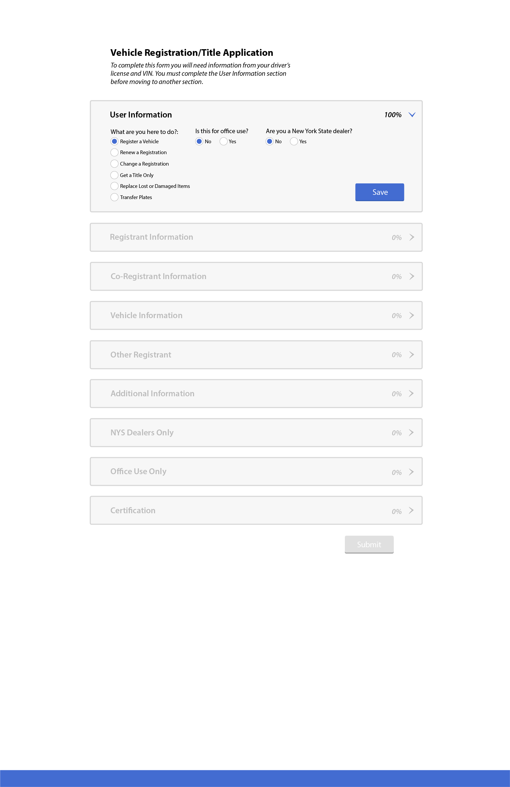
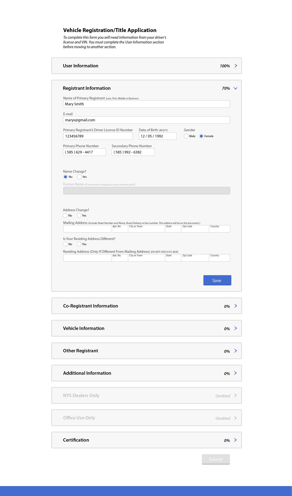
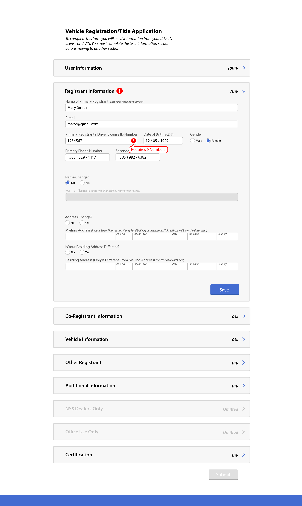

The goal of this project is to create a more effective and interactive design for the NYS DMV Vehicle Registration/Title Application form.
The biggest problems with the current form is that it is condensed and overcrowded. Many fields are grouped in an unhelpful and confusing way. The user could easily make mistakes while completing the form due to the poor arrangement of information. Some of the input fields are not even needed for the average user so there may also be confusion in what a user knows what they need to fill out.
The way the user would fill out this form is by first completing the User Information section. After saving that information, the form may omit certain sections if they are not required for the user. Next, the user can either go through each step in order by clicking each drop-down section, or the user can switch between all the sections as they wish. Once all of the sections have been filled out and Saved, the Submit button at the bottom of the screen will no longer be grayed-out/unable to be clicked on.
In my design comps I made sure to give the input sections in the form proper space around them so they would be as easy to read as possible. At the top of the form there are a couple sentences telling the user exactly what information they will need to complete the form so they can be prepared before they even begin.
When there is an error made within an input field the section heading will have a red exclamation point icon next to it, as well as the field that has the error. Hovering over the symbol in the input field will show a message that will tell the user what the error is exactly. These errors would all show if the user were to save a section with an error in it. This is also due to the fact that the submit button is grayed out until all sections are completed to ensure there will be no missing information.
Overall, I feel my final design gives the current form a much more interactive and less tedious and time-consuming experience.
  